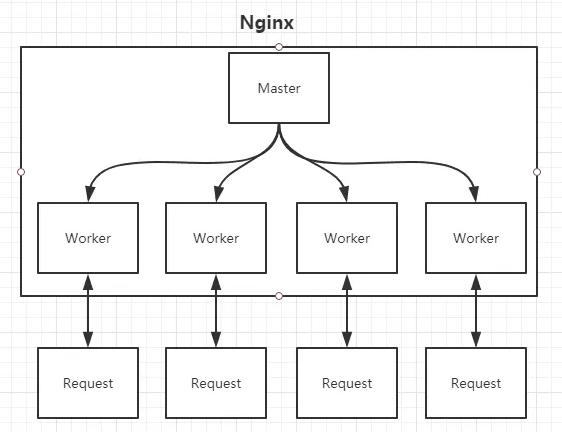
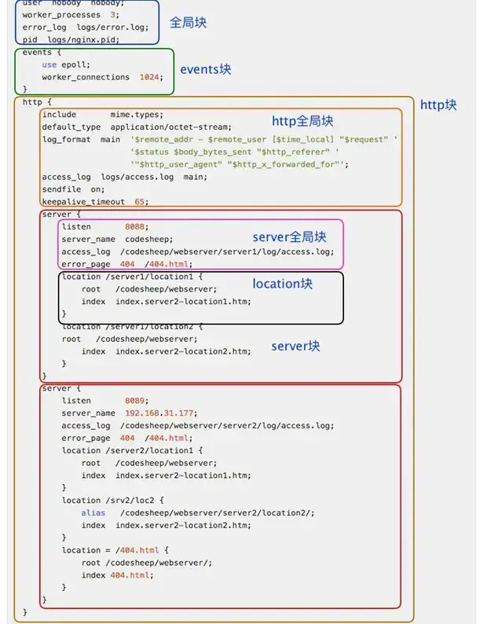

nginx

命令
1
2
3
4
5
6
7
8
9
10
11
12
13
14
15
16
| # 启动命令：
nginx -g 'daemon off;'
# windows
start nginx
# 重启命令：
nginx -s reload
# 快速关闭命令
nginx -s stop
# 有序地停止，需要进程完成当前工作后再停止
nginx -s quit
# 直接杀死nginx进程
killall nginx
|
目录
1
2
3
4
5
6
7
8
9
10
11
12
13
14
15
16
17
18
19
20
21
22
23
24
25
26
27
28
29
30
| ├── client_body_temp # POST 大文件暂存目录
├── conf # Nginx所有配置文件的目录
│ ├── fastcgi.conf # fastcgi相关参数的配置文件
│ ├── fastcgi.conf.default # fastcgi.conf的原始备份文件
│ ├── fastcgi_params # fastcgi的参数文件
│ ├── fastcgi_params.default
│ ├── koi-utf
│ ├── koi-win
│ ├── mime.types # 媒体类型
│ ├── mime.types.default
│ ├── nginx.conf #这是Nginx默认的主配置文件，日常使用和修改的文件
│ ├── nginx.conf.default
│ ├── scgi_params # scgi相关参数文件
│ ├── scgi_params.default
│ ├── uwsgi_params # uwsgi相关参数文件
│ ├── uwsgi_params.default
│ └── win-utf
├── fastcgi_temp # fastcgi临时数据目录
├── html # Nginx默认站点目录
│ ├── 50x.html # 错误页面优雅替代显示文件，例如出现502错误时会调用此页面
│ └── index.html # 默认的首页文件
├── logs # Nginx日志目录
│ ├── access.log # 访问日志文件
│ ├── error.log # 错误日志文件
│ └── nginx.pid # pid文件，Nginx进程启动后，会把所有进程的ID号写到此文件
├── proxy_temp # 临时目录
├── sbin # Nginx 可执行文件目录
│ └── nginx # Nginx 二进制可执行程序
├── scgi_temp # 临时目录
└── uwsgi_temp # 临时目录
|
配置文件
config.conf

1
2
3
4
5
6
7
8
9
10
11
12
13
14
15
16
17
18
19
20
21
22
23
24
25
26
27
28
29
30
31
32
33
34
35
36
37
38
39
40
41
42
43
44
45
46
47
48
49
50
51
52
53
54
55
56
57
58
59
60
61
62
63
64
65
66
67
68
69
70
71
72
73
74
75
76
77
78
79
80
81
82
83
84
85
86
87
88
89
90
91
92
93
94
95
96
97
98
99
100
101
102
103
104
105
106
107
108
109
110
111
112
113
114
115
116
117
118
119
120
121
122
123
124
125
126
127
128
129
130
131
132
133
134
135
136
137
138
139
140
141
142
143
144
145
146
147
148
149
150
151
152
153
154
155
156
157
158
159
160
161
162
163
164
165
166
167
168
169
170
171
172
173
174
175
176
177
178
179
|
worker_processes 1;
error_log logs/error.log;
error_log logs/error.log notice;
error_log logs/error.log info;
pid /var/run/nginx.pid;
events {
use epoll;
worker_connections 1024;
client_header_buffer_size 4k;
keepalive_timeout 60;
}
http {
include /etc/nginx/mime.types;
default_type application/octet-stream;
charset utf-8;
server_names_hash_bucket_size 128;
client_header_buffer_size 32k;
large_client_header_buffers 4 64k;
client_max_body_size 8m;
autoindex on;
sendfile on;
keepalive_timeout 65;
gzip on;
gzip_min_length 1k;
gzip_buffers 4 16k;
gzip_http_version 1.0;
gzip_comp_level 2;
gzip_types text/plain application/x-javascript text/css application/xml;
gzip_vary on;
include /etc/nginx/conf.d/*.conf;
upstream aaa {
}
server {
listen 80;
server_name www.aaa.com aaa.com;
index index.html index.htm index.php;
root /data/www/sk;
location ~ .*.(gif|jpg|jpeg|png|bmp|swf)${
expires 10d;
}
location ~ .*.(js|css)?${
expires 1h;
}
log_format access '$remote_addr - $remote_user [$time_local] "$request" '
'$status $body_bytes_sent "$http_referer" '
'"$http_user_agent" $http_x_forwarded_for';
access_log /usr/local/nginx/logs/host.access.log main;
access_log /usr/local/nginx/logs/host.access.404.log log404;
location /connect-controller {
proxy_pass http://127.0.0.1:88;
proxy_redirect off;
proxy_set_header X-Real-IP $remote_addr;
proxy_set_header X-Forwarded-For $proxy_add_x_forwarded_for;
proxy_set_header Host $host;
client_max_body_size 10m;
client_body_buffer_size 128k;
proxy_intercept_errors on;
proxy_connect_timeout 90;
proxy_send_timeout 90;
proxy_read_timeout 90;
proxy_buffer_size 4k;
proxy_buffers 4 32k;
proxy_busy_buffers_size 64k;
proxy_temp_file_write_size 64k;
}
location ~ .(jsp|jspx|do)?$ {
proxy_set_header Host $host;
proxy_set_header X-Real-IP $remote_addr;
proxy_set_header X-Forwarded-For $proxy_add_x_forwarded_for;
proxy_pass http://127.0.0.1:8080;
}
}
}
|
location
优先级：精确匹配 (=) > 优先前缀匹配 (^~) > 正则匹配 (~， ~*) > 普通前缀匹配 (/api/) > 通用匹配 (/)
1
2
3
4
5
6
7
8
9
10
11
12
13
14
15
16
| 请求 URI
│
▼
精确匹配（=）? → 匹配 → 使用
│
▼
优先前缀（^~）? → 最长匹配 → 使用
│
▼
正则匹配（~或~*）? → 第一个匹配的正则 → 使用
│
▼
普通前缀匹配 → 最长匹配 → 使用
│
▼
通用匹配（/） → 使用
|
= 开头表示精确匹配^~ 开头表示 uri 以某个常规字符串开头，不是正则匹配~ 开头表示区分大小写的正则匹配;~* 开头表示不区分大小写的正则匹配/ 通用匹配, 如果没有其它匹配,任何请求都会匹配到
进程模式 Master-Worker
Master 进程
读取并验证配置文件 nginx.conf；管理 worker 进程
Worker 进程
每一个 Worker 进程都维护一个线程（避免线程切换），处理连接和请求；注意 Worker 进程的个数由配置文件决定，一般和 CPU 个数相关（有利于进程切换），配置几个就有几个 Worker 进程
note
正向代理: 代理的是客户端, VPN
反向代理: 代理的是服务器
热部署
修改配置文件 nginx.conf 后，重新生成新的 worker 进程
新的请求交给新 worker 进程, 等待旧 worker 进程处理完所有任务后 kill
1
2
3
4
5
6
7
8
9
10
11
| # 启动
nginx
# 重启
nginx -s reload
# 配置
nginx -t
# 查看进程
ps -ef | grep nginx
|
负载均衡
跨域请求
1
2
3
4
5
6
7
8
9
10
11
12
13
14
15
16
17
| server {
listen 80;
location / {
add_header Access-Control-Allow-Origin *;
add_header Access-Control-Allow-Methods 'GET, POST, OPTIONS';
add_header Access-Control-Allow-Headers 'DNT,X-Mx-ReqToken,Keep-Alive,User-Agent,X-Requested-With,If-Modified-Since,Cache-Control,Content-Type,Authorization';
if ($request_method = 'OPTIONS') {
return 204;
}
}
}
|
开启 Gzip 压缩
1
2
3
4
5
6
7
8
9
10
11
12
13
|
gzip on;
gzip_min_length 1k;
gzip_buffers 4 16k;
gzip_http_version 1.0;
gzip_comp_level 2;
gzip_types text/plain application/x-javascript text/css application/xml;
gzip_vary on;
|